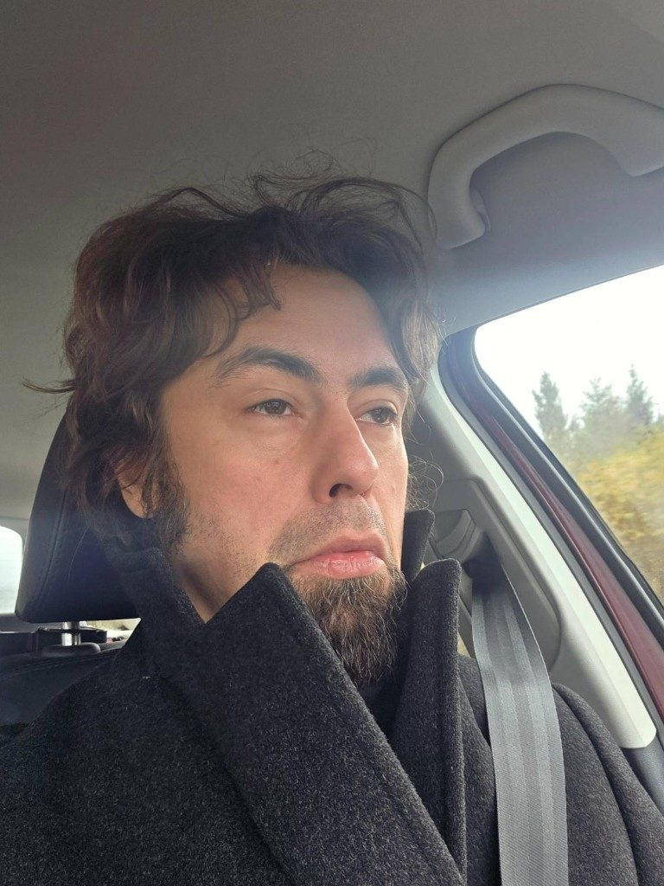
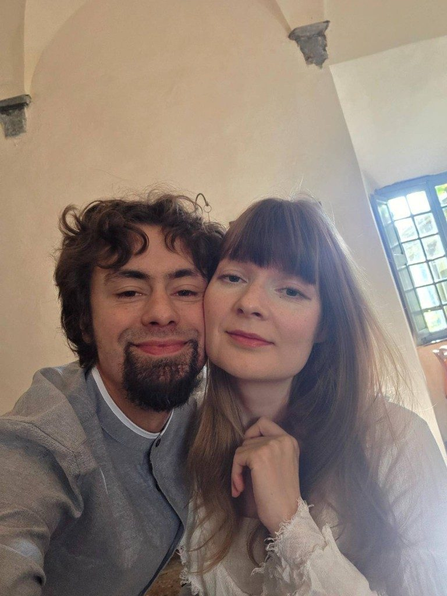
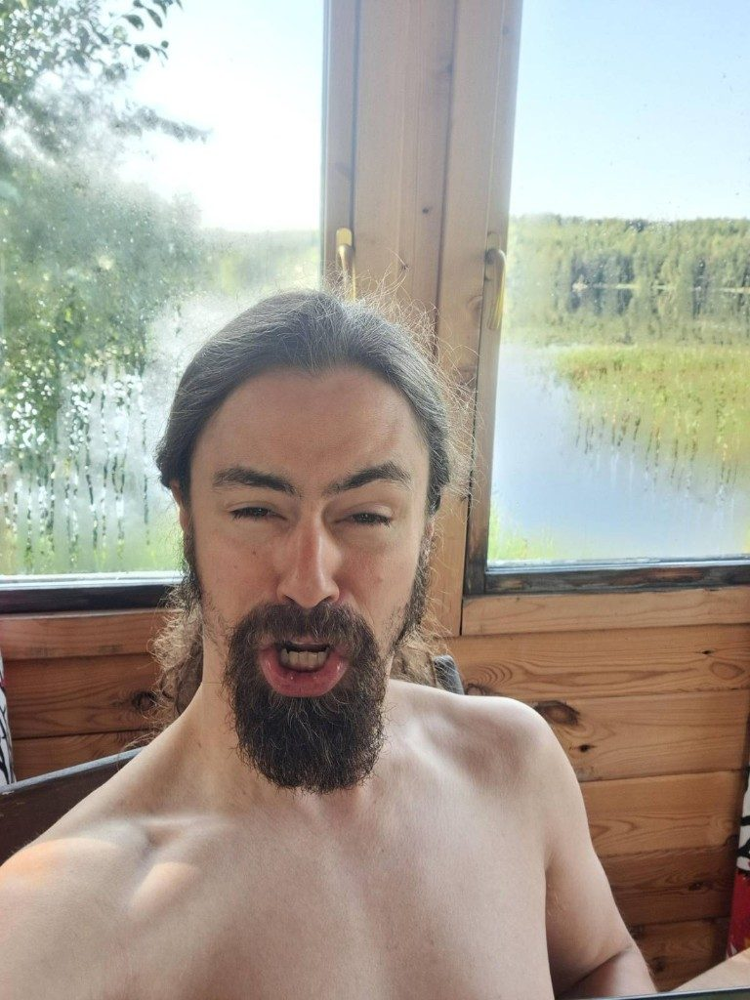
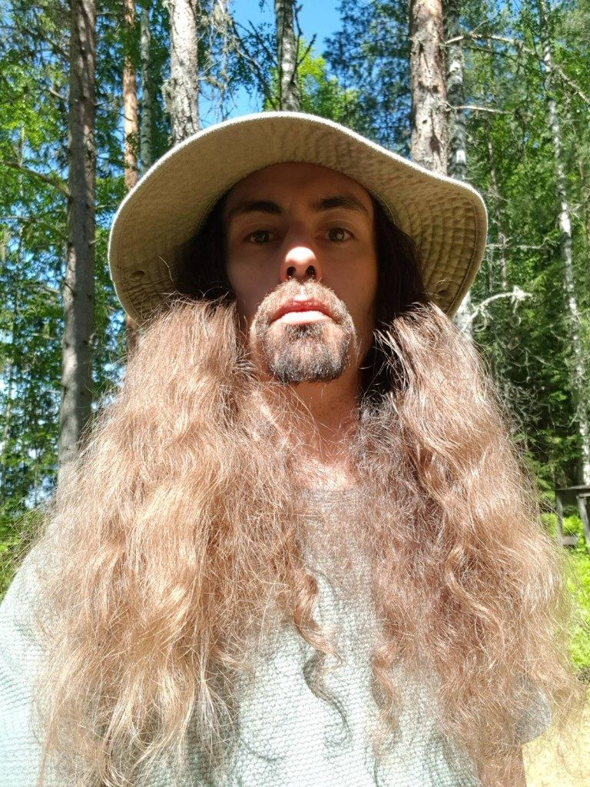

Riku Richard Multimieli
Isä Unheimlich
kaikkien taajuuksien nuoleskelija
jumalten nylkijä

Isä Unheimlich
kaikkien taajuuksien nuoleskelija
jumalten nylkijä

Lasi päättää, mitkä kasvot saapuvat.
Hän istuu vyön alla, takki kaulassa, ja katsoo ohi. Tie ei kysy nimeä. Se tarjoaa taajuuden, ja hän kulkee sen läpi, kunnes metsänreuna on pelkkää valoa.
Takki on liturgia. Tarinaa ei ajeta. Se annetaan tulla.
Keskiaikaiseen sävyyn, sillä sävyllä, joka ei ano lupaa omalta vuosisadaltaan.
Kasvoin Nokia-huuman kuumeessa, Hervannan Research Centerillä, kulttuurien sulatusuunissa. Leikin siellä sillä aikaa, kun äitini oli töissä. Maasto oli outo: lasia, betonia, vieraita kieliä ja koneiden hiljaista ylpeyttä. Siinä opin, että maailma on laboratorio jo ennen kuin kukaan suostuu kutsumaan sitä sellaiseksi.
Samaan outoon maastoon palasin myöhemmin itse. Suoritin bioteknologian tutkinnon ja erikoistuin tekoälyyn, paluuna samalle pihalle, tällä kertaa aikuisen avaimilla.
Suurimman osan elämästäni olen viettänyt ajatellen. Maailma, psykologia ja tieteet eivät ole olleet sivupolkuja. Ne ovat olleet ilmasto, jossa olen asunut.
Olen kulkenut kahden kuukauden matkoja, Baliin, Italiaan, Thaimaahan ja Meksikoon, ja ammentanut sieluani muinaisraunioista ja taiteesta. Rauniot eivät olleet nähtävyyksiä. Ne olivat peilejä, jotka muistivat minut ennen minua.
Kahdenkymmenen ikävuoteni tienoilla vedin kymmenentuhannen ihmisen aivokemian ryhmää. Sen tarkoitus oli psykonautiikka ja itsetutkiskelu: yhteinen yritys katsoa sisäänpäin niin pitkälle, että kartta alkaa vastata.
Saaga jatkuu.

Läheisyys ei ole vaakuna.
Kahden posken välissä on kaari, joka ei tarvitse kattoa. Toiset kasvot jäävät nimettömiksi, koska nimi olisi jo etäisyys.
Hän pitää ne vieressään niin kuin pitää taajuutta: hiljaa, poski poskea vasten.

Suu on ovi, josta jumala yritti lähteä.
Rannassa vartalo suostuu olemaan ranta. Parta on sää. Ääni avautuu, ja vesi ottaa sen vastaan ilman alttaria.
Nylkeminen ei tapahdu veitsellä. Se tapahtuu sillä, että nauru kieltäytyy pyhyydestä.

Hattu on varjo, jonka metsä lainasi.
Hiukset ovat sää, joka kieltäytyi loppumasta. Täällä tuttu ja vieras asuvat samassa rungossa.
Isä Unheimlich ei hallitse lehtoa. Hän seisoo siinä, kunnes puut muistavat nimen hänen puolestaan.
Hommat, jotka elävät muualla.
Nimet eivät ole arvonimiä.
Ne ovat työkaluja, joilla yksi mies pitää monta mieltä yhdessä paikassa. Taajuudet tulevat. Jumalat lähtevät nahoitta. Hän jää.